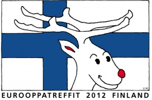

Moro!
Hier ist PORO!
Vielleicht könnt Ihr Euch noch an mich von Paris her erinnern. Eigentlich habe ich ja keinen richtigen Namen. In meiner großen Familie heißt jeder einfach nur poro. Ich glaube in Deutsch sagt man Rentier. Aber ich bin ein außergewöhnliches poro. PORO mit großen Buchstaben. Einfach weil ich grösser als die anderen bin, und ich habe sehr lange Beine. Niemand in meiner Familie hat vorher so lange Beine gesehen.
.
Warum? Vielleicht weil ich immer so viele Flechten in Lappland gegessen habe wo ich eigentlich herkomme. Mein Onkel heißt Elch, aber er hat nichts mit meinen langen Beinen zu tun. Aber es ist gut diese zu haben zusammen mit einem schönen Körper und netten Charakter. Deshalb bin ich für das Europatreffen in Finnland 2012 als Maskottchen auserwählt worden. Ich bin so aufgeregt!
.
Sie bringen mich in die Stadt Tampere, weil man mir sagte, dass Hunderte von Euch langen Freunden nächstes Jahr im Juni kommen werden. Aber, jetzt bin ich so besorgt zu sehen ob ich so groß wie Ihr alle bin. Und ob alle Ihr netten langen Freunde mich überhaupt sehen können. Ooh! Aber ich habe ja dieses große Geweih! Wenn Ihr also endlich alle da seid, könnt Ihr mein freundliches Gesicht auf den Schildern mit der finnischen Flagge sehen. Auf den Schildern gedruckt, zeige ich Euch dann den Weg zu allen wichtigen und interessanten Plätzen.
.
Ich kann es einfach nicht erwarten Euch alle kennen zu lernen!
.
Übrigens MORO heißt hier in Tampere, Finnland „Hallo“! Wir sehen uns dann!